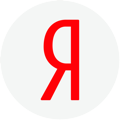
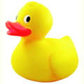

Where?


Paris Web, October 2016
Enables push notifications in webapps
PushManager.subscribe()PushSubscription contains endpoint and encryption keyServiceWorkerGlobalScope.onpush event handlerServiceWorkerRegistration.showNotification()PushSubscriptionPushRegistrationManager interfaceEnables game controller support in browser-based games

The gamepadconnected event fires when a gamepad is connected
window.addEventListener('gamepadconnected', function() {
console.log('Gamepad connected');
});
The navigator.getGamepads() method returns an array of connected gamepads
window.addEventListener('gamepadconnected', function(e) {
var gamepad = navigator.getGamepads()[e.gamepad.index];
console.log('Gamepad connected: Index %d', gamepad.index);
});
id: string of gamepad informationindex: unique index numberconnected: boolean indicating gamepad connection statebuttons: array of GamepadButton objectsaxes: array of axis based controlstimestamp: time the gamepad data was last updatedEnables simple haptic feedback from webapps
var vibrateOnce = function(e) {
window.navigator.vibrate(500);
};
var vibrateTwice = function(e) {
window.navigator.vibrate([500, 500, 500]);
};
var vibrateMore = function(e) {
window.navigator.vibrate([500, 500, 500, 500, 500]);
};
Locks mouse movement to a single element, removes the mouse cursor, and removes mouse movement boundaries
The requestPointerLock() method locks the pointer to an element
canvas.requestPointerLock();
The pointerLockElement property of the document object
if (document.pointerLockElement === canvas) {
console.log('Pointer loc status: Locked');
}
The exitPointerLock() method of the document object
document.exitPointerLock();
The pointerlockchange event fires when the pointer lock state changes
if ("onpointerlockchange" in document) {
document.addEventListener('pointerlockchange', someFunction, false);
}
The pointerlockerror event fires when requestPointerLock() or exitPointerLock() fails
document.addEventListener('pointerlockerror', someFunction, false);
Enables speech input and output for webapps

<button data-hint="Use space or enter to activate">
Foo
</button>
if (window.SpeechSynthesisUtterance === undefined) {
alert("Browser does not support the Web Speech API");
} else {
// Do something
}
hints = document.querySelectorAll('[data-hint]'),
hoverTimeout;
speakHint = function(e) {
var msg = new SpeechSynthesisUtterance(e.target.dataset.hint);
window.speechSynthesis.speak(msg);
};
function focusEventListener(e) {
hoverTimeout = window.setTimeout(speakHint, 500, e);
}
function blurEventListener(e) {
window.clearTimeout(hoverTimeout);
}
function mouseoverEventListener(e) {
hoverTimeout = window.setTimeout(speakHint, 500, e);
}
function mouseoutEventListener(e) {
window.clearTimeout(hoverTimeout);
}
hints.forEach(function(hint) {
hint.addEventListener('focus', focusEventListener);
hint.addEventListener('blur', blurEventListener);
hint.addEventListener('mouseover', mouseoverEventListener);
hint.addEventListener('mouseout', mouseoutEventListener);
});


...
Regardez le rapport d'implementation
Mais ça changera…
picture / srcsetdetails, summaryinput type={week,month,datetime-local}registerProtocolHandler()
oncopy, oncut, onpastepicture, srcsetImages "responsive"
<picture>
<source srcset="1.png" type="image/png"
media="max-width:20px">
<source srcset="1.svg" type="image/svg+xml"
media="min-width:20px">
<img src="one.jpg" alt="two!">
<picture>srcset…<img src="ouff.jpg" alt="Oh-la-la"
sizes="super-petit.jpg 100w,
petit.jpg 300w,
grand.jpg 800w">
details et summary<details>can
<summary>Ce que se voit toujours</summary>
Et voici, des explications, etc
</details>typesinput type="week": input type="month": input type="datetime-local":
registerProtocolHandler()navigator.registerProtocolHander("mailto",
"http://mail.yandex.com", "Яндекс Почта")web+[a-z]*"
oncopy, oncut, onpaste<code oncopy="alert('Vous allez me partager?')">()</code>
Etc…
reportValidity()fastSeek()forceSpellCheck()scrollRestoration()menu type="contextmenu", menuitemaccesskey="1 a 語""a", comme HTML 4rev retourne, principalement pour RDFa<section><h1>
<section><h1><h2><label form="UnAutre"><range multiple>
MediaControllerappcachekeygen - dès HTML 5.2mousewheel<option></option> est valide<figcaption> n'import où dans une figureEtc etc… et il en reste à faire :(
requestAnimationFrameallowfullscreen<style scoped><dialog>isProtocolHandlerRegisteredcontenteditable="???"inputmodePeut-être, entre autres, il y aura…
beforeInputmoduleThe pictures used in this talk:
The demos used in this talk: